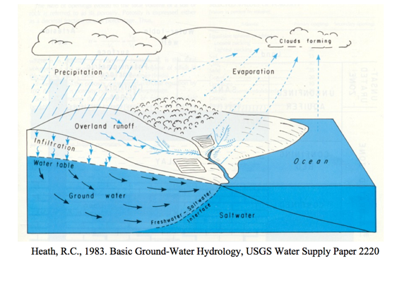

Water (Fetter pp. 1-23)¶
Hydrology¶
The study of the occurance, distribution, movement, and chemistry of water
Hydrogeology¶
The interrelationships of geologic materials and water (geohydrology is an alternative term)
Hydrologic Cycle¶
Usual definition, but here we focus on the subsurface portion.
Here is a typical diagram depicting the hydrologic cycle.

The driving force for the cycle (not shown) is solar energy that provides the energy to vaporize liquid water that then rises into clouds, moves onshore, and rains (or snow, sleet, \(\dots\). and other forms of precipitation) A portion of the rain becomes runoff, another portion returns to the atmosphere as evaporation, another portion infiltrates into the ground and becomes groundwater.
The surface water system would be the part of the diagram that lies above the plane defined by the ocean and infiltration line. The subsurface system is the part that is below this plane.
Expressed as a simple system diagram it would be depicted in the figure below

Hydrologic Equation (Water Budget)¶
The water budget, or hydrologic balance is simply the expression of the conservation of mass in hydrologic terms for a hydrologic system.
Generally it is expressed as a rate (or volume) balance.
The hydrologic equation is the fundamental tool in hydrology to describe amounts of water in storage in different compartments at different scales.
The equation expressed in “words” is
Rate of inflow - Rate of outflow = Rate of change of storage + Rate of internal mass generation.
Symbolically it is exrepssed as:
where
\(I\) is inflow volume, \(O\) is outflow volume, \(S\) is storage volume (i.e. within a watershed), and \(G\) is generated volume. \(G\) is generally zero, but is included to be consistent with the balance equations you have learned elsewhere (i.e. environmental engineering, chemistry, \(\dots\))
Surface Hydrologic System¶
Here is the surface water system broken into its own sub-system.
Notice the dashed line is the boundary – exactly like a control volume in fluids.
Surface Water Budget¶
From the surface water system diagram, appropriate budget components are:
Inflows: Rainfall; Surface water from outside boundary, recharge from Groundwater.
Outflows: Evapotranspiration; Surface water leaving boundary; Infiltration to groundwater.
Storage: Water levels in lakes, rivers, ponds within the boundary; water stored on leaves and other surfaces.
Sub-surface Hydrologic System¶
Here is the sub-surface water system broken into its own sub-system.

Notice the dashed line is the boundary – exactly like a control volume in fluids.
Sub-surface Water Budget¶
From the sub-surface water system diagram, appropriate budget components are:
Inflows: Groundwater flow from outside boundary; Recharge from surface system (via infiltration)
Outflows: Groundwater flow out of the boundary; Discharge (pumping; springs) to surface system
Storage: Water levels in aquifers within the boundary
Combined Hydrologic System¶
Here are the two systems “combined.” Communication is by the two shaded paths on the figure.

Loss from the surface system becomes gain to the ground system. Loss from the ground system becomes gain to the surface system.
Business Aspects¶
Contracts
Salary
Overhead
Insurance
Ethics¶
Professional development (continuing education)
Honest reporting
Advice of bad findings
Prevent violation of regulations
Conflict of interest